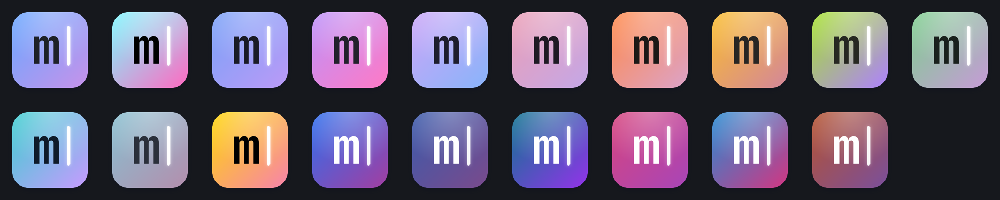

A small, beautiful code editor in the spirit of Atom. Every feature is a package, and you can change any of them while it runs.
macOS (Apple Silicon & Intel) · Windows · Linux · free and open source
curl -fsSL https://mikemich.github.io/minimide/install.sh | sh
Atom made hacking your tools feel fun. Editors have since grown into platforms nobody fully understands: you can configure them, but you can't really change them. Minimide is small enough to own.
Plain JavaScript. No framework, no build magic. Every line that runs is one you can read.
Tree view, git, terminal, language servers, Vim, themes, even settings: all on the same public API you get.
Save a package, your stylesheet or keymap and it reloads instantly. Tweak the editor while you use it.
Packages are plain ES modules with access to commands, keybindings, settings, panels, the terminal, language servers and CodeMirror itself.
// ~/.minimide/packages/word-goal/index.js export function activate(mide) { const label = mide.ui.h('span'); mide.statusBar.addItem({ element: label, align: 'right' }); mide.workspace.onDidUpdateEditor((editor) => { const words = editor.getText().split(/\s+/).length; label.textContent = `✍️ ${words} / 500`; }); mide.commands.add('word-goal:reset', 'Reset Goal', () => mide.notify.success('Fresh start!')); }
Simple by default, with power tools a keystroke away.
file:line output.file:42.:w and :q. Off until you want it.19 themes, 27 fonts and any accent color, built in. A theme is one CSS file of variables: write your own in minutes.

Even the icon is yours. The Dock icon is drawn from your theme, accent color and editor font, and changes the moment you switch.
Install other people's packages without handing them your computer. Atom's packages could do anything; Minimide's run in a sandbox.
Installed packages run in an isolated worker with no access to your files, programs or the internet.
A package that needs more asks for it, like “read files in this project” or “use the network”, and you see the list before installing.
Browse Settings → Packages → Discover or install any owner/repo. Publish yours with the minimide-package topic.
Download it, read it, change it. Then show us what you built.
curl -fsSL https://mikemich.github.io/minimide/install.sh | sh